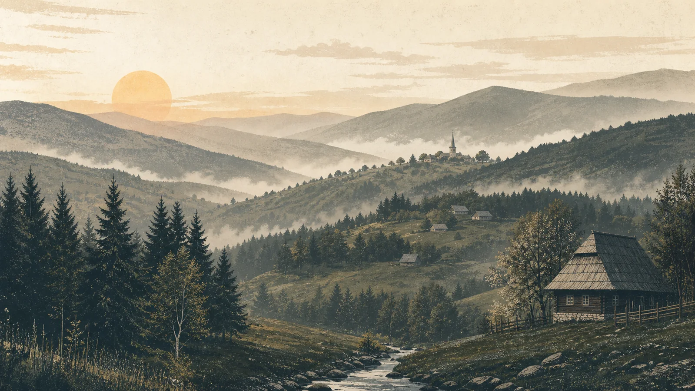

Acum în grilă:Prototip public
Zoom peisaj 100%
Programul urmează ritmul muntelui: emisiuni dimineața, reluări peste zi, Povestea de seară la 21:45, apoi doar sunetele naturii până la răsărit. Acul arată unde ne aflăm acum, pe ora României.
Toate episoadele vor fi păstrate și vor putea fi ascultate oricând, aici sau în orice aplicație de podcast. Până la primele documentări proprii, puteți testa experiența cu trei peisaje sonore din domeniul public.
| Emisiune | Descriere | Flux |
|---|
Arhiva se încarcă…

Radio Apuseni este infrastructura audio a Ecomuzeului Țării Moților, dezvoltată de Apuseni Eco Roots. Nu urmărim actualitatea de moment: fiecare interviu, fiecare sunet și fiecare poveste sunt gândite să rămână valoroase și peste zece sau douăzeci de ani.
O singură întrebare decide ce intră în emisie: ajută acest conținut la o mai bună înțelegere a Munților Apuseni?
Radio Apuseni · Ecomuzeul Țării Moților · Apuseni Eco Roots
Documentare, educație, comunitate.
Această versiune publică este un prototip funcțional. Înregistrările demonstrative nu provin din Munții Apuseni; sunt marcate explicit și vor fi înlocuite cu documentări proprii înaintea lansării editoriale. Surse și licențe.
Instalați Radio Apuseni pe ecranul principal: atingeți Distribuire, apoi Adaugă pe ecranul principal.